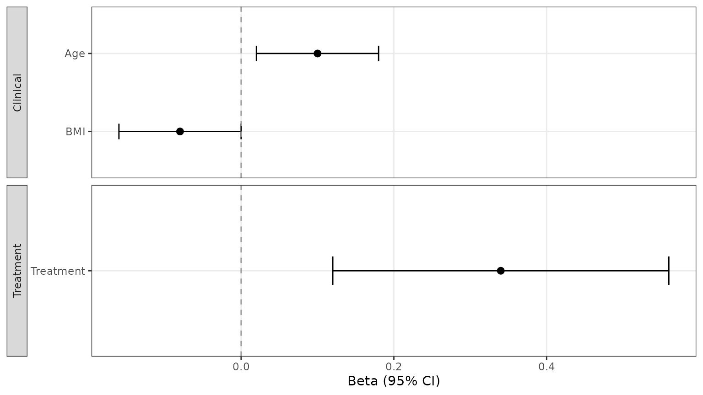
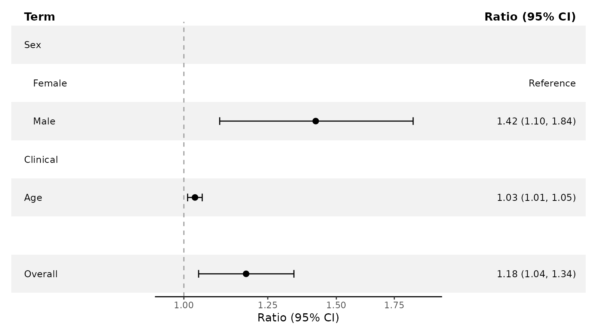
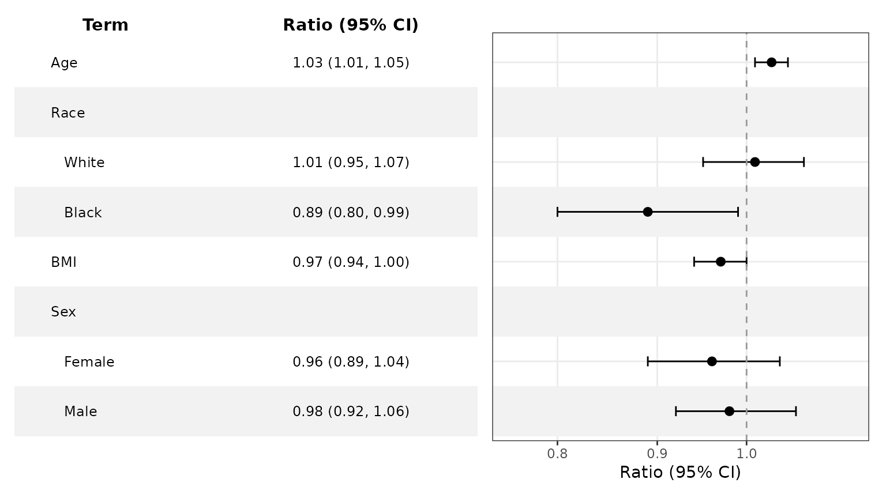

Preparing Forest Data
Source:vignettes/ggforestplotR-data-helpers.Rmd
ggforestplotR-data-helpers.RmdUse this guide for custom column mappings, metadata, and structured rows. For model extraction and subgroup inference, see Working with Fitted Models.
Use as_forest_data() to standardize a coefficient
table
as_forest_data() converts your column names into the
internal structure used by ggforestplotR. The result is a
forest_data data-frame subclass containing the columns
expected by ggforestplot(),
add_forest_table(), and add_split_table().
raw_coefs <- data.frame(
variable = c("Age", "BMI", "Treatment"),
beta = c(0.10, -0.08, 0.34),
lower = c(0.02, -0.16, 0.12),
upper = c(0.18, 0.00, 0.56),
display = c("Age", "BMI", "Treatment"),
section = c("Clinical", "Clinical", "Treatment"),
sample_size = c(120, 115, 98),
p_value = c(0.04, 0.15, 0.001)
)
forest_ready <- as_forest_data(
data = raw_coefs,
term = "variable",
estimate = "beta",
conf.low = "lower",
conf.high = "upper",
label = "display",
facet = "section",
n = "sample_size",
p.value = "p_value",
estimate_scale = "identity",
effect_label = "Beta",
conf.level = 0.95
)Use forest_metadata() to inspect the attributed
metadata. The complete fitted model and a duplicate copy of the source
data are not retained.
forest_metadata(forest_ready)[c(
"estimate_scale", "axis_transform", "effect_label", "conf_level",
"reference_value", "source_model", "source_package", "source_columns"
)]
#> $estimate_scale
#> [1] "identity"
#>
#> $axis_transform
#> [1] "identity"
#>
#> $effect_label
#> [1] "Beta"
#>
#> $conf_level
#> [1] 0.95
#>
#> $reference_value
#> [1] 0
#>
#> $source_model
#> NULL
#>
#> $source_package
#> NULL
#>
#> $source_columns
#> variable beta lower upper display
#> "variable" "beta" "lower" "upper" "display"
#> section sample_size p_value
#> "section" "sample_size" "p_value"Once the data are standardized, you can pass them straight into
ggforestplot().
ggforestplot(forest_ready)
Structured forest data and reference rows
Map a source column with row_type = to place reference
categories and structural rows alongside estimates.
estimate and summary rows need finite
estimates and confidence bounds. reference,
header, and spacer rows use NA
for all three geometry values. Structured rows keep their source order;
sort_terms must remain "none".
structured <- data.frame(
term = c("Female", "Male", "Clinical", "Age", "", "Overall"),
estimate = c(NA, 1.42, NA, 1.03, NA, 1.18),
conf.low = c(NA, 1.10, NA, 1.01, NA, 1.04),
conf.high = c(NA, 1.84, NA, 1.05, NA, 1.34),
subgroup = c("Sex", "Sex", NA, NA, NA, NA),
row_type = c("reference", "estimate", "header", "estimate", "spacer",
"summary")
)
ggforestplot(
structured,
subgroup = "subgroup",
row_type = "row_type",
exponentiate = TRUE,
striped_rows = TRUE
) +
add_split_table(
left_columns = "term",
right_columns = c("estimate"),
reference_text = "Reference"
)
You can also supply explicit "header" and
"spacer" rows in the source table. A mapped
subgroup creates its own header; reference rows inside the
subgroup appear as indented children.
Supply subgroup rows explicitly
For an existing coefficient table, set
subgroup = "subgroup_variable_name". This functionality
still works when some variables have subgroups and others don’t,
demonstrated here.
mixed_coefs <- tibble::tribble(
~term, ~subgroup, ~estimate, ~conf.low, ~conf.high,
"Age", NA_character_, 1.03, 1.01, 1.05,
"White", "Race", 1.01, 0.95, 1.07,
"Black", "Race", 0.89, 0.80, 0.99,
"BMI", NA_character_, 0.97, 0.94, 1.00,
"Female", "Sex", 0.96, 0.89, 1.04,
"Male", "Sex", 0.98, 0.92, 1.06
)
ggforestplot(
mixed_coefs,
term = "term",
subgroup = "subgroup",
estimate = "estimate",
conf.low = "conf.low",
conf.high = "conf.high",
exponentiate = TRUE,
striped_rows = TRUE
) +
add_forest_table()
This subgroup mapping controls presentation; it does not compute
effects or tests. Keep each subgroup in one contiguous block. With
p_method = "overall", the first nonmissing p-value in a
block appears on its header; use p_method = "level" for
values on individual rows.
Custom source columns remain available for table selection and formatting. See Customize Forest Plots and Tables for display controls.